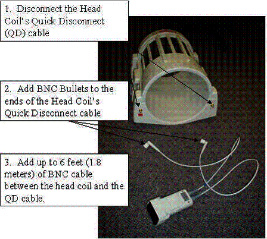
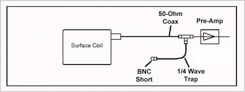
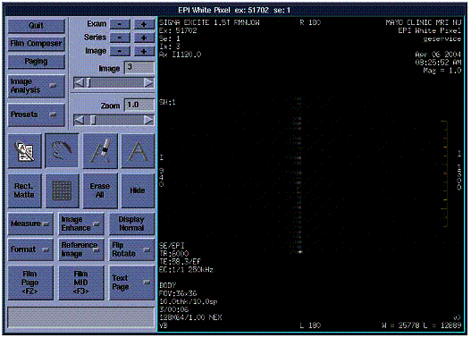

White Pixel - Theory
“Sniffing”
for spikes:
One "epiwp"
technique that has been successful in isolating the source of white pixels is
to configure a receive coil per one of the below diagrams and procedure to
“sniff” them out. With a decent length of
cable extension, you will be able to move the coil around the screen room
to localize the spike source.
NOTE: RF Transmit output should be disabled during “sniffing” via
the switch on Front Panel I/O of the RRF chassis.
Configuration
for sniffing with the traditional Quad Head coil
For EXCITE systems, you can use
a head coil as an antenna to test for noise in different locations around the
magnet room. This configuration is especially valuable to determine if
the spikes are coming from inside or outside of the magnet bore, or determining
if the intensity is worse in the front of the magnet or rear. See Illustration 2 below for a description
of how to configure the Head coil as an antenna. When the coil has
been connected to the BNC extension cables, re-connect the Quick Disconnect box
to the LPCA.
Excite Split Head Coil
configuration
See Illustration 2 below for a
description of how to configure the new Split Head coil as an antenna. Since we
will be using the head coil for receive only, you may hook up either one or
both of the connectors on the split head coil.
Sensitivity to small amplitude spikes may be improved by using both
cables. When connecting both cables to a split head coil, make sure that
the cables are of equal length to maintain the proper quadrature phase
relationship of the receive signals.
The quadrature splitter is located in the Quick Disconnect assembly for
the split head coil, so the two cables are actually carrying the I and Q
signals of the coil. When the coil has
been connected to the BNC extension cables, re-connect the Quick Disconnect box
to the LPCA.
.

Illustration 2: SPLIT HEAD COIL AS AN ANTENNA: HOW TO CONNECT
NOTE: Length
of cable is not limited to six feet, but with that length of cable you will be
able to troubleshoot out both ends of the bore.
Configuration for spike sniffing with a surface coil:
Often,
the head coil is just too darned sensitive to effectively localize the source
of the spikes. In that circumstance, it
is beneficial to use a smaller, less sensitive receive coil on an even longer
extension cable, and to hook it up directly to the receive cable in such a way
that all of the hardware normally located at the rear of the magnet (table
bridge, head carriage and rear pedestal) can be removed to eliminate them as
spike candidates and in preparation for possibly removing the magnet end-bells.
Since
we are only searching for broadband spikes (and not NMR signals) we can
use a coil and preamp from any field strength system. Experience indicates that by looking at lower frequency
components of the spike we are better able to discriminate proximity of the
coil to the spike source. Below is a diagram of how to configure the system for
sniffing:

Illustration 2: Surface Coil Sniffer
Configuration
In
the configuration above the receive cable has a tee connector, a piece of
coaxial cable 1/4 wavelength long and a shorting connector at the opposite end
of it. This forms a band-pass filter
that will reduce the effect of preamp saturation due to the Gradients
pulsing. It is required because we are
not using either the Head TR network or the body hybrid, which normally
accomplish this filtering. This trap is
most important when sniffing inside (or just at the ends of) the bore where the
gradient fields are the highest. Place
the tee connector in the receive line as close to the preamp as possible.
Select the trap cable length based on the preamp and coil frequency that you are using:
1/4
wavelength at 3.0T = .39 meters (~15 inches)
at 1.5T
= .78 meters (~31 inches)
at 1.0T =
1.15 meters (~45 inches)
at 0.5T
= 2.3
meters (~90.5 inches)
Make sure the preamp, coil, trap length and the system receiver are all tuned
to the same frequency.
If the ¼ wave trap is not used you may get results during epiwp that appear similar to below:

Illustration 3: Noise from Preamp Diodes
Note
that in the above image there are very regular series of spikes that occur at
extremely high amplitude (auto window is 25778). That is because the preamp diodes are directly in the receive
path so when they switch on and off it maxes out the receiver A2D.
To
prevent your body from affecting the sniffer coil’s impedance and influencing
the received signal amplitude you can tape the small surface coil to a wooden
broomstick or other non-metallic handle.
We affectionately refer to this as the “White Pixel Magic Wand”.
Let’s
get ready to rumble!!!
Set-up the scanner in epiwp mode 2 (on the mode 1 image that has previously been the worst) and enable Auto Display and Auto W/L on the autoviewer. Be sure that the receiver frequency is tuned to the frequency of the receive coil and preamp that you are using!!! When the spikes occur the auto display "window" can be used as a measurement of the spike's amplitude. You can spin the LCD Monitor around so that it can be seen through the screen room window and have your buddy (you are sharing all of this fun with your friends, aren't you?) read out the image levels as you blast through the epiwp images.
It may take a while to get used to shouting to each other between the "beeps", and also the delay between when you move the "magic wand" and when it changes the spike amplitude. But this method has proven 100% successful, when all other methods (including BRM replacements) have failed. In many cases, you will find there are a multitude of spike sources, not just one. Sometimes you need to just keep "peeling the onion" and eliminating one source after another, allowing you to even see the next one.
Noise
sources to be on the lookout for:
Loose metallic hardware (even non-ferrous)
or cables anywhere within the gradient field
Loose crimps on gradient cables at
the Penetration Panel and the Gradient Coil (butt splices)
Vibration of raised cableway floor
tiles (usually aluminum)
Loose or arcing Dynamic Disable Boards
(DDSB's), Direct Drive, T/R drives, etc.
Rear table support vibration and
arcing
Loose hardware in the head carriage
...and the list just goes on and
on!!
Beware!!
Experience shows that the RF Body coil will act as a shield to any noise coming
from the RF Shield or Gradient coil.
What this means is, when using a head or surface coil, you may see
little or no noise at the very center of the bore but the noise increases in
amplitude toward the ends of the gradient coil. In this circumstance you would expect the body coil to pick it up
very well.
After you have stripped your scanner down to parade rest for troubleshooting and have found something and fixed it, it is wise to retest in epiwp mode 1 at frequent intervals of the re-assembly. This can save you huge amounts of time by knowing just what was touched since your last clean test results.
Take
it from me young Jedi; there is a light at the end of
the white pixel tunnel... and no, it's not just the bore light!!
May the force be with you!
------------------
Jump to:
White
Pixels in Raw Data and Images